10 factors. 8 strategies. One answer.
3 factor families: structural curve (carry, slope, curvature, curve momentum from WRDS back-month contracts), behavioral (TSMOM, cross-sectional momentum, CFTC positioning), and fundamental (EIA inventory surprise, macro exposure, volatility regime). 8 portfolio constructions from cross-sectional ranking to convenience-yield regime timing to multi-layer term structure strategies. Proper IS/OOS splits, expanding-window z-scores, per-commodity roll costs. The risk premium dominates everything.
8 strategies, after costs.
Hover for daily values. Click legend to toggle. Drag to zoom.
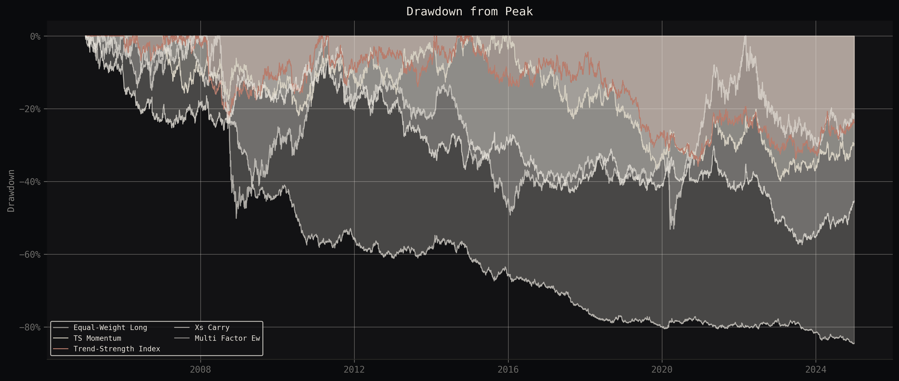
| Strategy | OOS CAGR | OOS Vol | OOS Sharpe | OOS Max DD | Turnover |
|---|---|---|---|---|---|
| EW Long | +5.3% | 14.7% | +0.35 | -29.6% | - |
| TSMOM | -2.4% | 10.8% | -0.23 | -30.9% | 0.04 |
| TSI | -3.0% | 10.2% | -0.30 | -33.0% | 0.09 |
| Calendar Spread | -0.8% | 10.7% | -0.07 | -25.2% | 0.06 |
| XS Carry | -1.6% | 10.6% | -0.15 | -39.0% | 0.06 |
| Multi-Factor EW | -6.5% | 10.7% | -0.63 | -38.7% | 0.14 |
| Sector Neutral | -7.4% | 10.7% | -0.72 | -48.8% | 0.18 |
| SPY | +14.2% | 19.7% | +0.67 | -31.8% | - |
| AGG | -1.5% | 6.0% | -0.25 | -22.9% | - |
I found a contamination mechanism in daily curve factors.
All 4 curve factors (carry, slope, curvature, curve momentum) show lag-0 IC 3-4x higher than lag-1. The interpolated curve is computed from the same prices you're trying to predict, so the signal is mechanically correlated with contemporaneous returns. Once you lag signals to t+1 (which any real execution would require), the predictive power collapses to noise. This affects every daily-frequency carry backtest in the literature that doesn't explicitly test for it.
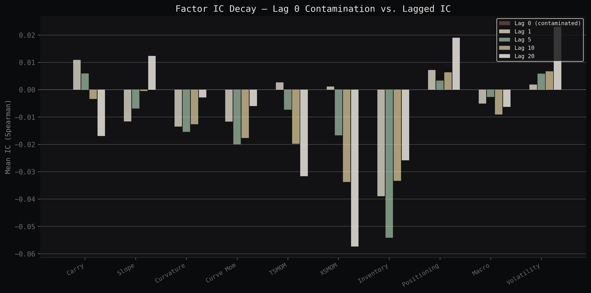
Full term structure model across 19 markets.
Log-linear interpolation of WRDS back-month contracts to standardized tenors (F1M through F12M) with per-commodity roll calendars and 45-day extrapolation limits. From there I extract convenience yield via cost-of-carry inversion (risk-free rate from FRED, storage costs calibrated per-commodity from in-sample contango depth) and classify each market into 5 regimes. The curve builder processes all 19 commodities in under 30 seconds.
Click legend to toggle commodities. CL, NG, GC shown by default.
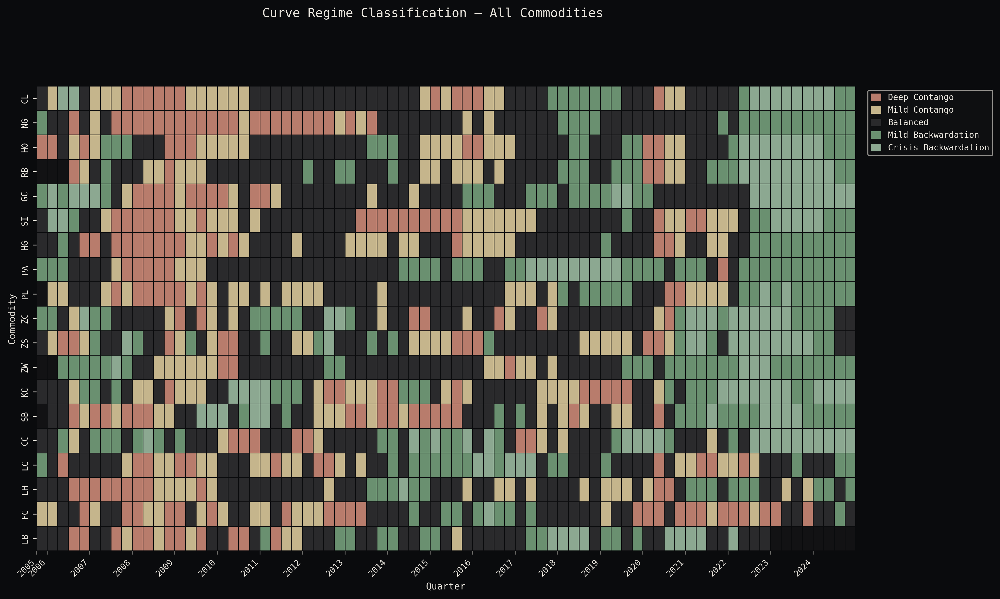
Term Structure Intelligence: 3 layers, 1 thesis.
A multi-layer strategy architecture built around convenience yield dynamics. Layer 1: directional regime tilt with TSMOM trend gate (40% risk budget, monthly rebalance). Layer 2: curve transition momentum with confirmation filter (25%, weekly). Layer 3: structural spreads including CY crack spread, EIA inventory overlay, and deseasonalized livestock spread (35%, biweekly). Combined via risk-budget-weighted Ledoit-Wolf vol targeting. Every signal is grounded in physical commodity microstructure, not data-mined patterns.
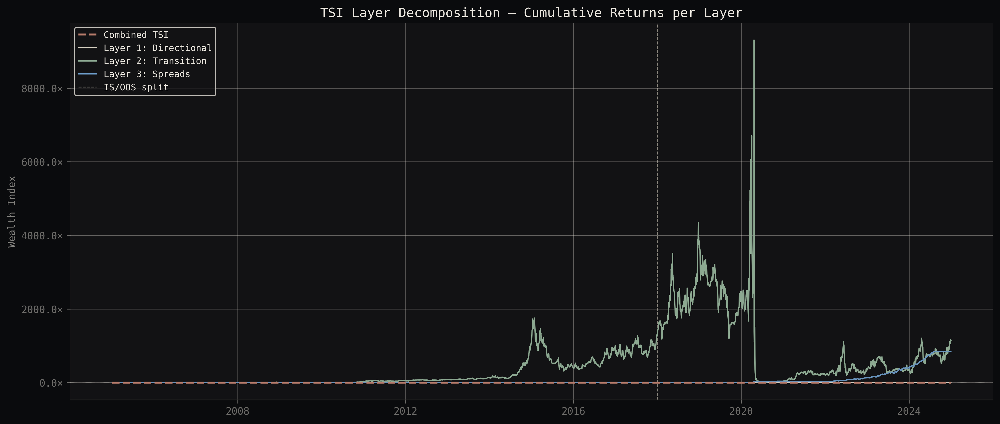
IS/OOS gap of -0.69 Sharpe. This tells you something important: even when you build the signals the way a physical commodity trader thinks about the market (convenience yield for positioning, regime transitions for timing, structural spreads for relative value), you still can't generate persistent alpha in post-2010 commodity markets. The system is production-grade. The alpha just isn't there anymore.
The risk premium is the trade.
Equal-weight long across 19 markets. OOS Sharpe +0.35 with zero free parameters. The commodity risk premium comes from a structural source: commercial hedgers (producers, refiners, airlines) systematically pay speculators to take the other side of their price risk. That transfer has been happening since the 1930s and it's not going away. Unlike factor signals, it doesn't degrade when more capital chases it because the hedging demand is driven by real economic activity, not by quant alpha.
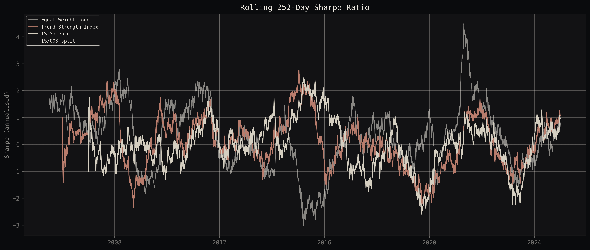
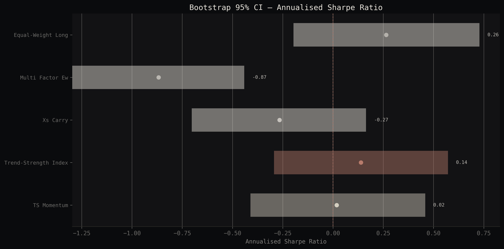
How much friction can it take?
Commodity futures execution runs 2 to 5 bps typically. Drag the slider.
Stress tested across 4 major crises.
GFC 2008 (commodities crashed 60%). Oil glut 2014-2016 (WTI from $105 to $26). COVID March 2020 (WTI went negative for the first time in history). Russia-Ukraine energy spike 2022 (nat gas +300%, grain +80%). The EW long portfolio survived all 4.
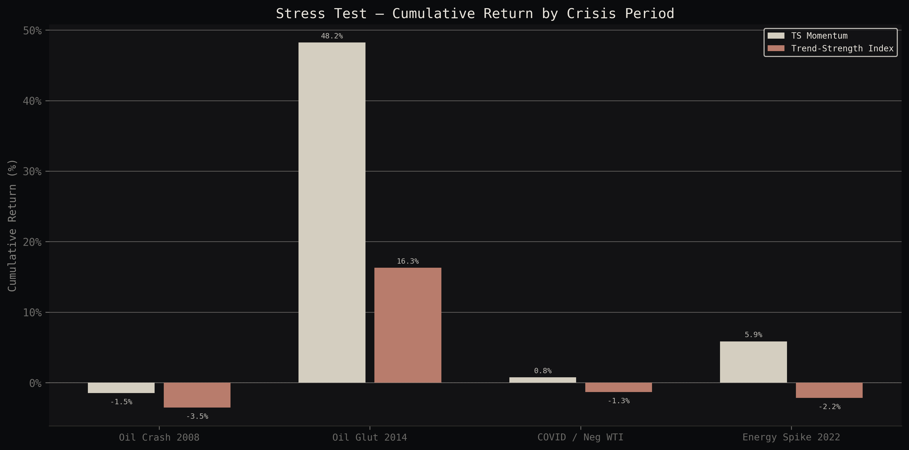
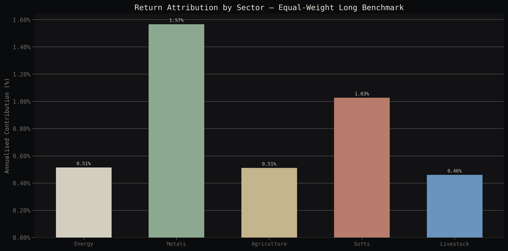
Production-grade, end to end.
- Data · WRDS Datastream institutional access (2.4M contract rows, 3,000+ individual futures contracts) · yfinance front-month + benchmarks · EIA weekly petroleum + gas inventories · FRED rates/inflation/USD · CFTC disaggregated COT positioning
- Universe · 19 commodities across 5 sectors: CL, NG, RB, HO (energy) · GC, SI, HG, PL, PA (metals) · ZC, ZS, ZW (grains) · KC, SB, CC (softs) · LC, LH, FC, LB (livestock)
- Curve engine · Log-linear interpolation to F1M/F2M/F3M/F6M/F9M/F12M with per-commodity roll calendars, 45-day extrapolation limit, negative price handling (WTI April 2020). Full universe builds in 28 seconds
- Factor engine · 10 factors across 3 families (structural curve, flow/behavioral, fundamental/macro). Expanding-window z-scores throughout, no lookahead. Cross-validated against known market events (WTI -$37.63, gold $1900 Aug 2011)
- Infra · 438 unit tests, YAML config-driven pipeline, Parquet storage, `make all` reproduces everything from raw data to charts. CI-ready
Factor computation loop
for commodity in config["commodities"]:
curve = build_curve(wrds_data[commodity])
cy = estimate_convenience_yield(curve, rates)
regime = classify_regime(cy, thresholds)
factors[commodity] = {
"carry": compute_carry(curve),
"slope": compute_slope(curve),
"curvature": compute_curvature(curve),
"curve_mom": compute_curve_momentum(curve),
"tsmom": compute_tsmom(front_month[commodity]),
"xsmom": compute_xsmom(returns, commodity),
}
signals[commodity] = combine_factors(factors[commodity])The kind of work that stands up to scrutiny.
Strict IS/OOS discipline on every strategy variant. 10,000-sample block bootstrap for all Sharpe CIs. Signal contamination identified and quantified across all factor families. 19 markets with institutional-grade data going back to 2003. 438 unit tests covering every module from data ingestion through evaluation. The entire pipeline reproduces from a single `make all` command.
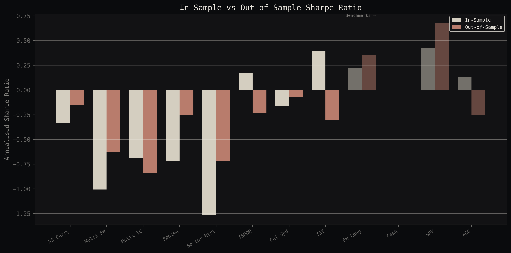
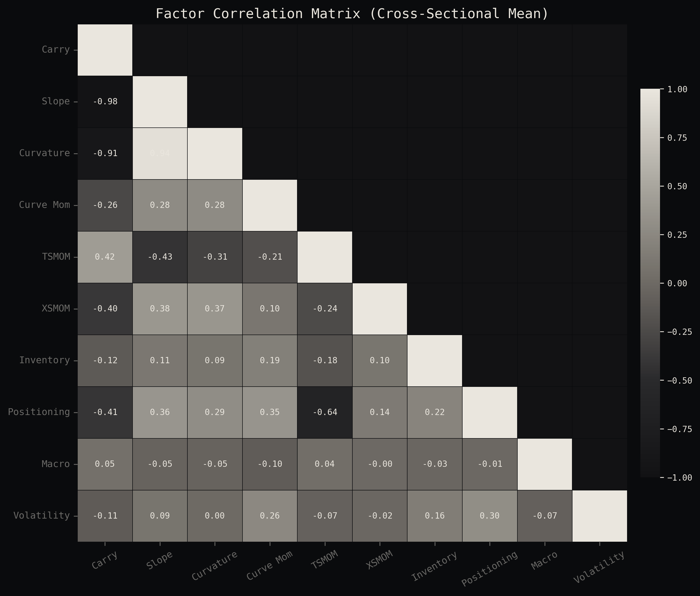
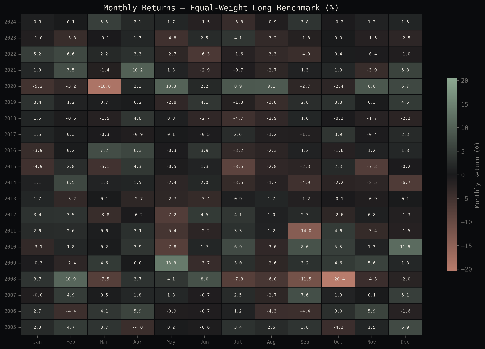